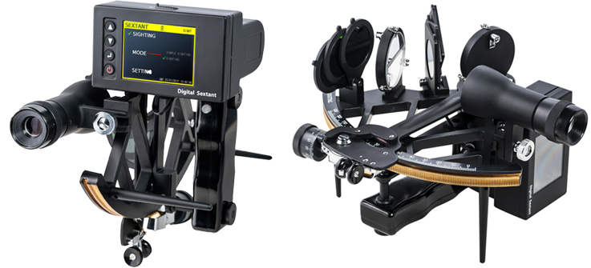
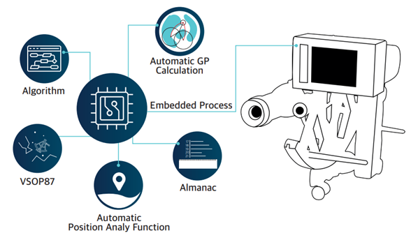

The DIGITAL SEXTANT is the first electronic sextant in the world and gives users quick and rapid identification of location plus reliable back-up in case of GPS malfunction or failure. A sextant is an essential instrument on any ship or vessel, designed to measure the altitude angle between the horizon and celestial body (such as the sun, moon or a star), and is used to determine the ship’s latitude and longitude position, especially in the event of the failure of the ship’s GPS navigation system.
Advantages of the Digital Sextant
- Standalone device. No external systems or sources required for calculation
- Fixes the position of the ship quickly (within 1 second after sighting)
- Easy to operate (no training required) whether stationary of moving
- Minimizes the attendant risk of operator errors
- Each reading is stored and can be printed via a computer connection
Applications
- Oil, LNG, LPG, Chemical Tankers under OCIMF’s regulation
- IMO & Non-IMO Ships
- Naval Ships, Coast Guard Ships, Government Ships
- School Training Ships, Lifeboats of Ships
- Leisure Yachts and Boats, etc.